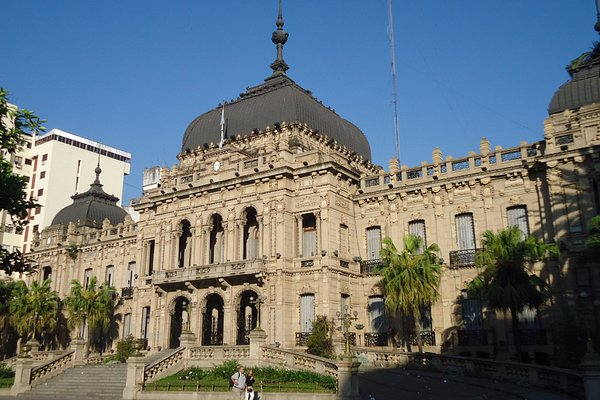
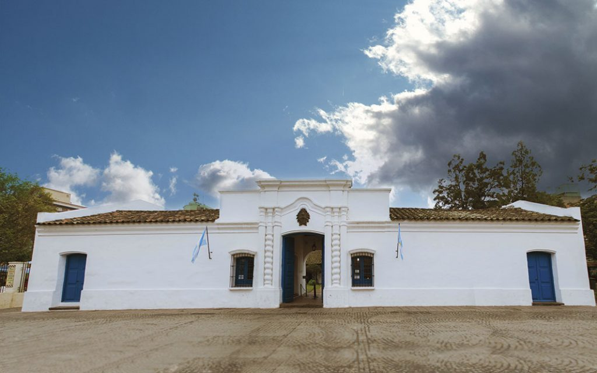
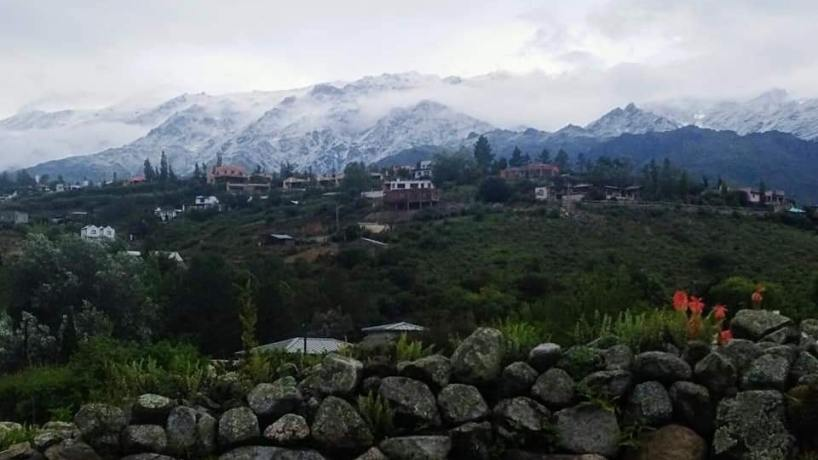

Mi presentacion personal
Mi nombre es Mauricio, soy de Tucumán, estudiante de último año de la Tecnicatura Superior en desarrollo de Software. Soy un loco de la tecnología y los videojuegos.
Mi ciudad es la capital de la provincia de Tucumán, tenemos muchas cosas lindas y feas a la vez, como se puede apreciar en las siguientes imágenes:
Ésta es la hermosa casa de gobierno, también conocida como la cueva de Alí Babá y los chorrocientos gatos.
Acá tenemos la casa historica de todos los argentinos, (NO casita de Tucuman)
Lo más hermoso de mi provincia son nuestros cerros